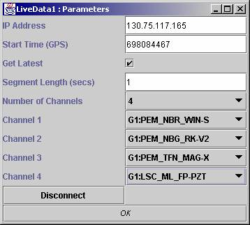

Input Types :
Output Types : SampleSet
Date :
Enter the ip address and click connect (or press return)
Enter the gps time or click “get latest” to get the latest time (this will continually get the latest time). Either of the actions will display a list of available channels for that time.
Enter the number of seconds (then press return) and select the number of channels. This will change the number of output nodes. Select which channels you want to look at

NB If you use the Get Latest, then the data may not be continuous (this depends on a few things such as network speed and amount of data to download). Data maybe repeated if you have a quick connection and small amount of data or it may have gaps if you have a slow connection and lots of data.